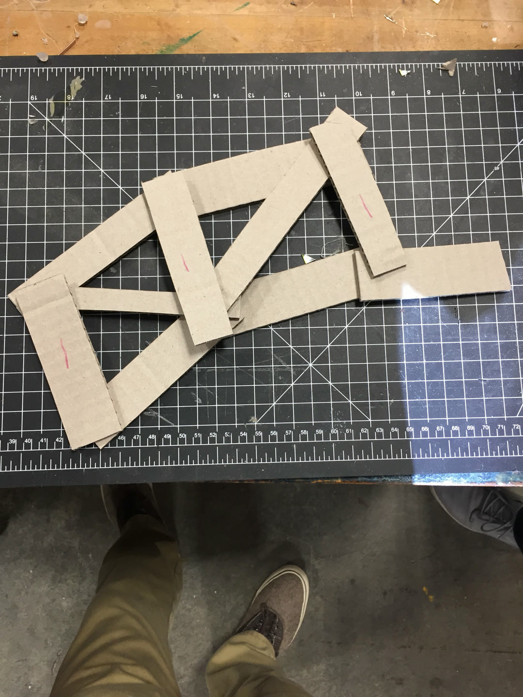
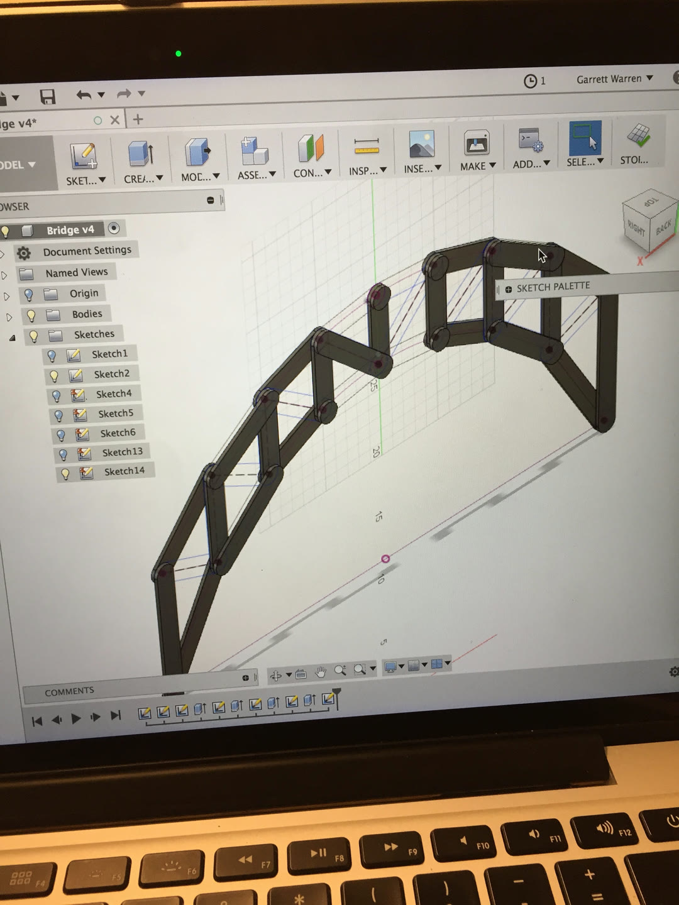
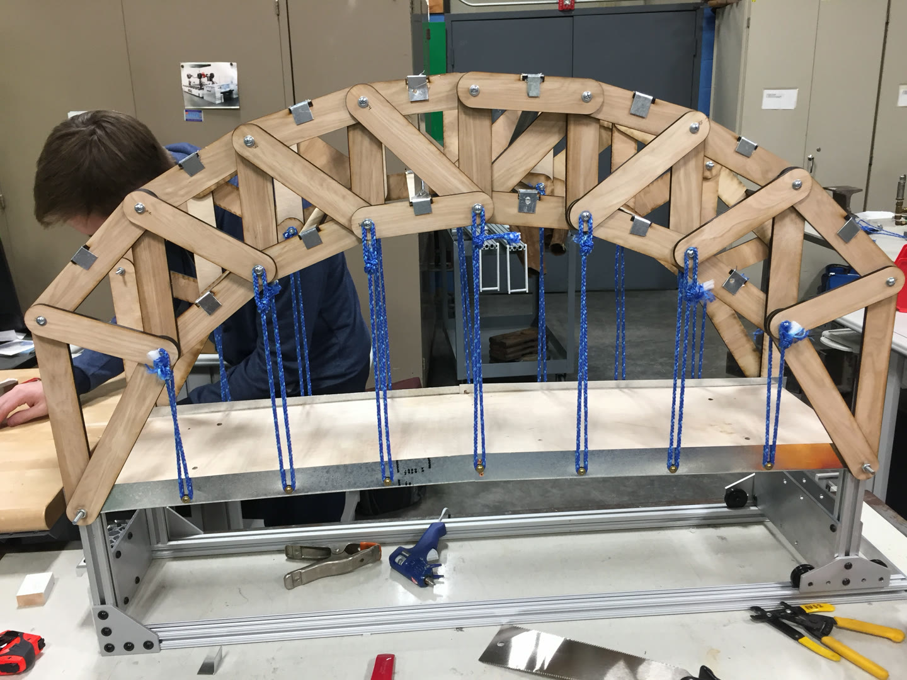

Arch Bridge
A wooden truss arch bridge, worked out first in cardboard and CAD, with the deck hung from the arches on cords.
I mocked up the truss geometry in cardboard, modeled the arch in CAD, then built it from plywood members bolted together with metal brackets. Blue cords hang the deck from the two arches.


